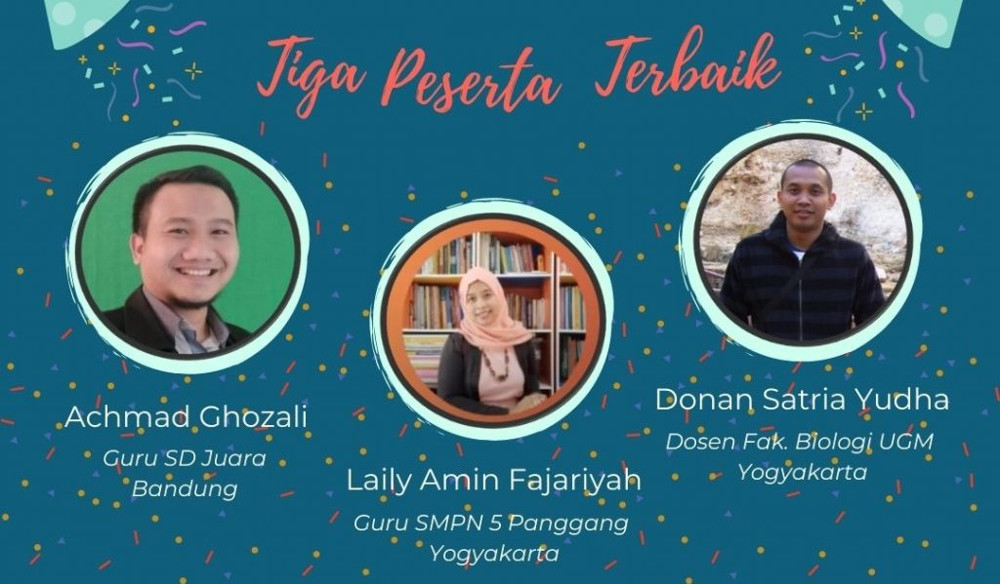

21 Pendidik Mengikuti Pelatihan Daring Sumber Pembelajaran Terbuka “Bahan Ajarku untuk Semua”

Creative Commons Indonesia telah mengadakan pelatihan daring sumber pembelajaran terbuka pada tanggal 4- 28 November 2020 untuk 21 peserta yang terpilih dari 97 orang yang mendaftar. Peserta pelatihan merupakan peserta merupakan pendidik formal maupun informal. Mulai dari pendidik di SD, SMP, SMK dan Perguruan Tinggi, hingga komunitas yang berfokus pada pendidikan balita, anak, dan pemuda. Selain itu, peserta juga berasal dari berbagai macam kota di seluruh Indonesia.

Pelatihan bertujuan untuk membekali peserta dengan pengetahuan dan kemampuan teknis dalam pemanfaatan dan pembuatan bahan ajar terbuka untuk diterapkan dalam pembelajaran jarak jauh (PJJ) maupun pembelajaran di kelas. Kemampuan ini juga meliputi pemahaman mendasar tentang Hak Cipta dan Lisensi Creative Commons sebagai lisensi terbuka. Di akhir pelatihan, peserta membuat Sumber Pembelajaran Terbuka (SPT) sesuai bidangnya masing-masing berbekal pengetahuan dan keterampilan yang diperoleh selama pelatihan. Untuk mengakses materi-materi pelatihan klik di sini.
Selama mengikuti pelatihan daring para peserta dibagi menjadi tiga kelompok dan di tiap kelompok, yang terdiri dari tujuh peserta didampingi oleh satu fasilitator. Pendampingan tersebut untuk membantu dalam memahami materi dan mengerjakan tugas. Pelatihan didesain dengan format lokakarya.
Pertemuan daring via Zoom ditujukan untuk membekali peserta dengan pengetahuan yang diperlukan, mencobakan keterampilan keterampilan yang dibutuhkan, melakukan kerja kelompok dengan tim kecil, dan memberikan kesempatan untuk berdiskusi dengan fasilitator secara langsung. Selain via Zoom, peserta juga dapat berdiskusi dengan peserta lain maupun dengan fasilitator melalui grup WhatsApp.
Tugas-tugas selama pelatihan sebagai wadah untuk mendemonstrasikan pengetahuan dan keterampilan yang diperoleh, baik secara individu maupun kelompok, sekaligus berkontribusi pada sumber daya bersama (commons). Fasilitator akan memberikan umpan balik secara individu terhadap setiap tugas peserta. Aktivitas pelatihan meliputi pemaparan pengetahuan, simulasi keterampilan, kerja individu, kerja kooperatif, kerja kolaboratif, berbagi pengetahuan, dan penggunaan umpan balik sesama peserta. Pelatihan ini merupakan simulasi kecil bentuk pembelajaran terbuka yang dapat peserta terapkan dalam kelas/komunitasnya masing-masing.
Di sesi terakhir pelatihan, diumumkan pula tiga peserta terbaik yakni Achmad Ghozali (pendidik di Sekolah Dasar), Laily Amin Fajariyah (pendidik di Sekolah Menengah Pertama) dan Donan Satria Yudha (pendidik di Perguruan Tinggi) yang mendapatkan mini hibah sejumlah Rp3.000.000,-. Hibah tersebut akan digunakan untuk mempromosikan mengenai sumber pembelajaran terbuka.
Testimoni Perserta Pelatihan
Terima kasih sudah memberikan pencerahan, wawasan, dan ilmu yang sangat diperlukan di zaman era digital seperti sekarang ini. Selain itu, mendapat komunitas baru yang good person.
Mengikuti pelatihan ini meninggalkan kesan yang mendalam bagi saya. Melalui pelatihan ini, saya jadi lebih mengerti dan memahami pengertian dan pembuatan SPT dengan mengikuti kaidah penulisan atribusi hak cipta. Saya berpesan kepada CCID untuk terus tanpa mengenal lelah berbagi informasi penting seperti SPT ini.
Cukup seru ketika mengikuti zoom meeting dan menyelesaikan tantangan yang diberikan oleh CCID. Semoga CCID tetap eksis dan makin menebar manfaat hingga ke pelosok negeri tercinta demi peningkatan kualitas pendidikan di Indonesia. Terima kasih atas kesempatan yang diberikan untuk menjadi bagian sebagai peserta pada pelatihan keren ini.
Saya merasa pelatihan ini sangat menyenangkan dan sangat bermanfaat bagi saya yang berprofesi sebagai guru. Saya sangat bersyukur dan berterima kasih kepada CCID telah memilih saya menjadi peserta dalam pelatihan ini, ternyata banyak hal yang belum saya ketahui, belum saya explore, banyak ilmu dalam pengelolaan teknologi informasi yang belum saya ketahui. Saya juga sangat terinspirasi dengan pemateri-pemateri yang masih muda tetapi sangat profesional di bidangnya, dan juga teman-teman yang luar biasa. Semua hal yang saya dapatkan dari pelatihan ini memberikan saya banyak pembelajaran dan pengalaman, dan insyaallah akan sangat bermanfaat.